A mobile app prototype to make on-campus civic life visible and actionable. HCI · UX Design · 2024
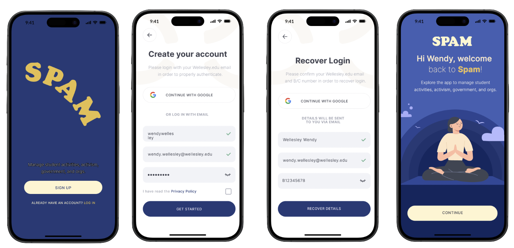
Purpose
Over seven weeks in Human-Computer Interaction (CS220), our team of four designed Spam!, a mobile web prototype to increase student civic participation and organizational transparency at Wellesley College. Modeled after the school’s iconic “spam boards,” the app reimagines physical flyers as a centralized, accessible, and interactive digital platform for civic engagement — making it easier to vote, discover events, and stay informed.
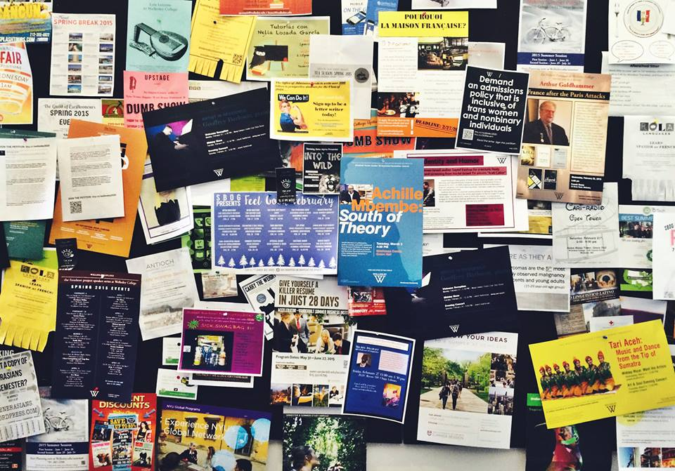
What It Does
Spam! serves as a civic engagement hub for college students — consolidating elections, events, and volunteering opportunities into a clean mobile interface. Students can:
Browse upcoming activism and community events
Vote securely in organizational elections
RSVP, track attendance, and earn badges for participation
Access civic resources like voter registration and educational materials
The app fosters both transparency (through visible election results and activity tracking) and motivation (through gamified engagement badges).
What the App Addresses
Interviews revealed that most students rely on posters, word of mouth, and social media for event awareness — channels that are fragmented and easy to forget. Physical spam boards promote visibility but not follow-through. Many students reported missing events simply because they forgot details after walking by a poster. Spam! transforms that analog discovery process into a persistent, digital, and personalized experience that still retains the energy of campus life.
Central Question
How might we increase civic participation and transparency in student life by transforming campus “spam culture” into a digital, interactive system?
Objectives
Improve visibility of civic events and organizational elections
Enable low-friction voting and event participation
Support accountability through visible confirmation and results
Encourage consistent engagement through motivational badges
Research
Research Goals
Understand how students currently discover and remember campus events
Identify barriers to participation and organizational transparency
Determine effective motivational and filtering features for engagement apps
Needfinding & Interviews
We conducted contextual interviews with students, faculty, and alumni. Across users, three consistent themes emerged:
Time pressure and forgetfulness: Students attend only a small fraction of events they hear about (often <30%).
Over-saturation of communication: Users described email lists and physical spam as “cluttered,” desiring relevance and personalization.
Desire for streamlined discovery: Students wanted to browse by type (talks, service, protests) or incentives (free food, leadership credit).
“I see a poster, think ‘I want to go,’ but then I forget the date completely.”
“It’d be great to have one place for everything — not 10 different lists.”
“If I could just filter by what’s happening soon or what I actually care about, I’d go to more events.”
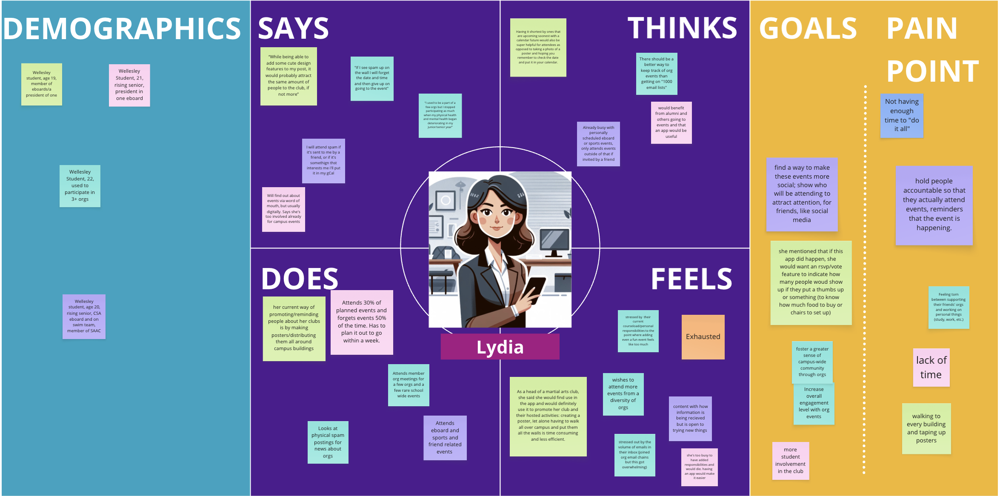
Empathy map visualization
Personas & Flows
Wendy — Event Searching
Social connectionTimeboxedFilter-first
Snapshot. Friday was blocked for a hangout, but plans fell through. Wendy still wants a social, low-effort plan that fits her saved time slot.
Goal. Find a fun, non-academic event (ideally with free food) happening Friday evening.
Returns to the personalized feed with Friday-only results.
Finds Wushu Open Practice + Free Boba → opens detail → RSVPs.
Emily — Org Follow-Up
First-yearExplorationAsks & Contact
Snapshot. After sampling many events, Emily is deciding which orgs to join. She recently tried BOW Climbing and wants more details.
Goal. Get questions answered and contact someone she met at the event.
Flow in Spam!.
Searches for BOW Climbing → opens org page.
Skims the User-contributed FAQ; posts a new question when she can’t find one answer.
Opens Contact → finds the member she met → sends a friendly note expressing interest.
Sofia — E-board Inquiry, SOI Upload, Voting
Two-year memberLeadershipAccountability
Snapshot. Long-time member of Counterpoint magazine; wants to step into leadership next year.
Goal. Discover open roles, submit an SOI, and vote with confidence.
Flow in Spam!.
Sees elections announcement in feed → taps to Leadership page.
Reviews open roles & timelines → uploads SOI (visible alongside other candidates).
When polls open, navigates to Voting → casts votes for each role → later checks posted results.
Task & Domain Analysis
Find and RSVP to civic events filtered by interest or timing
Contact orgs for leadership or follow-up questions
Vote in campus or org elections with transparent confirmation
Existing systems like WeEngage, 25Live, and Google Calendar were siloed. Spam! merges them into one cohesive platform.
Below is our task analysis flow, where the left is the current method of information finding, and right is with Spam!
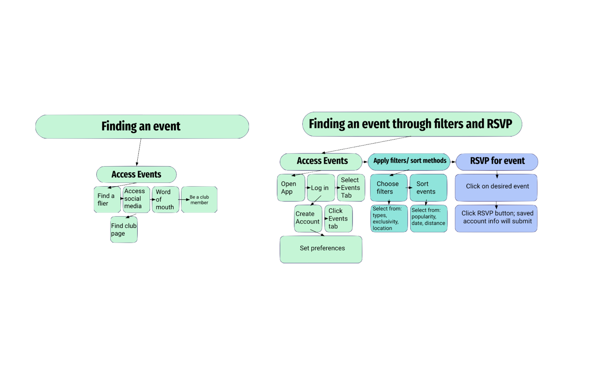
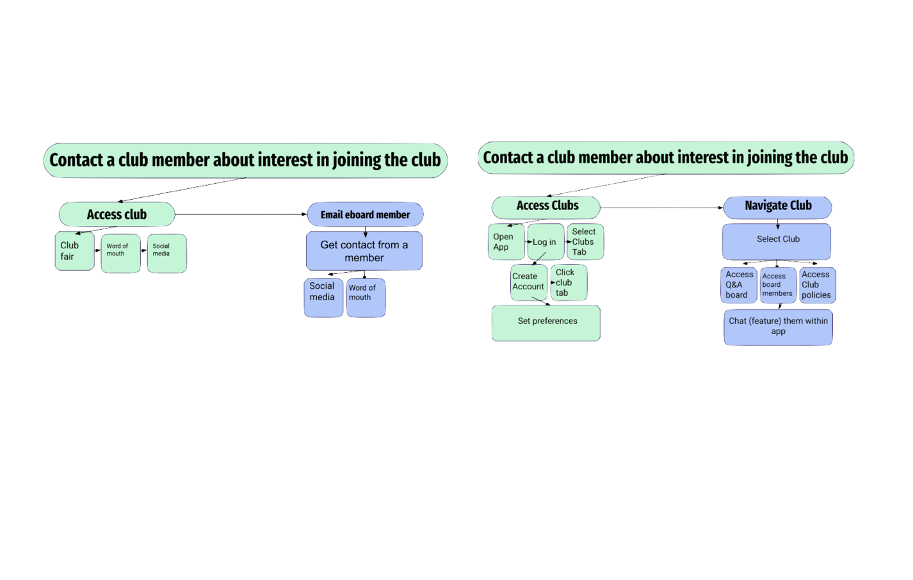
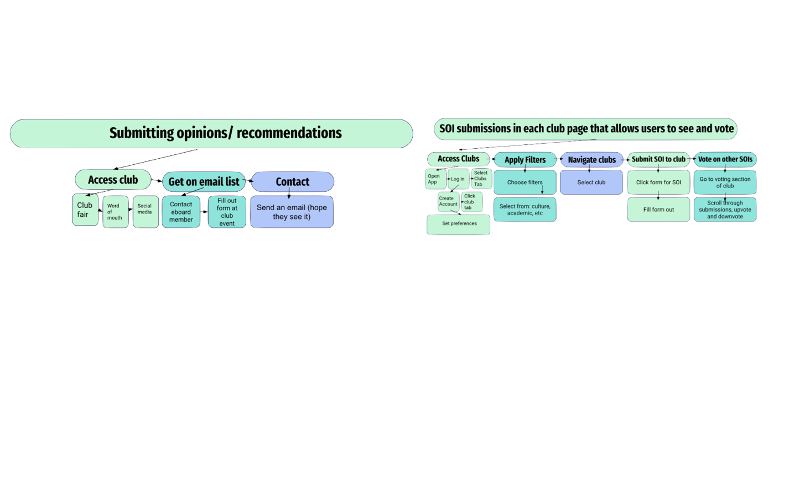
Design Prototype
Design Guidelines
Accessibility: High contrast, low-cognitive-load layouts
Energetic clarity: Retain the playfulness of physical spam without the clutter
Motivation: Reward engagement without creating noise
Transparency: Clear ownership, timelines, and accountability in votes
Branding
The palette reinterprets the Spam can’s blue and yellow — blue (#253A77) for structure and yellow (#E4BF47) for calls to action — balancing trustworthiness and energy.
Brand palette
Wireframes
Low-Fidelity Wireframes
Early navigation and interaction sketches which we later created in Balsamiq helped us validate the tab model (Events, Voting, Resources, Profile), test filtering affordances, and tune copy before visual styling.
Click below for enlarged low fidelity wireframes.
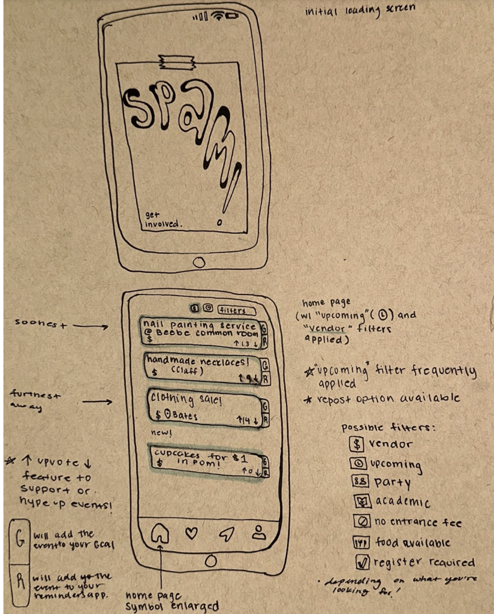
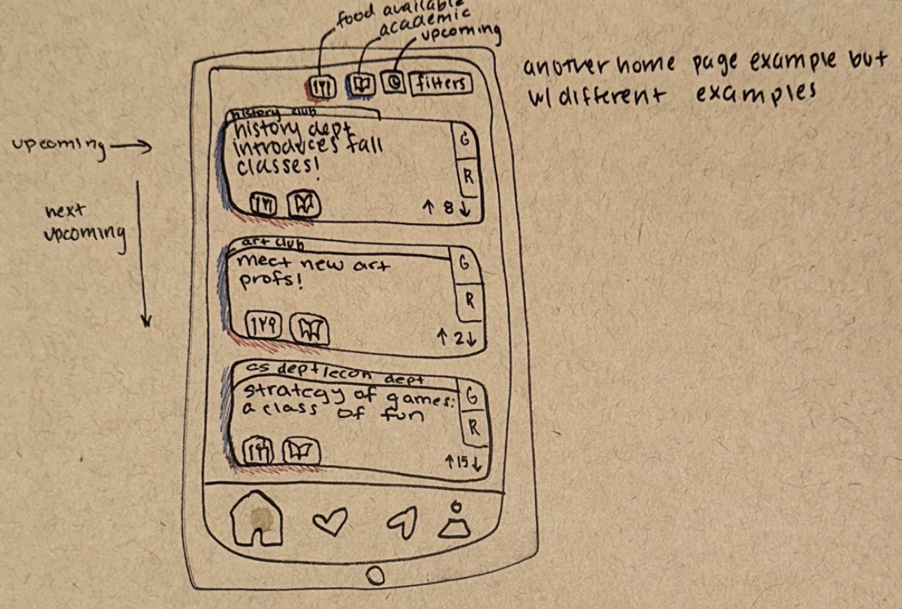
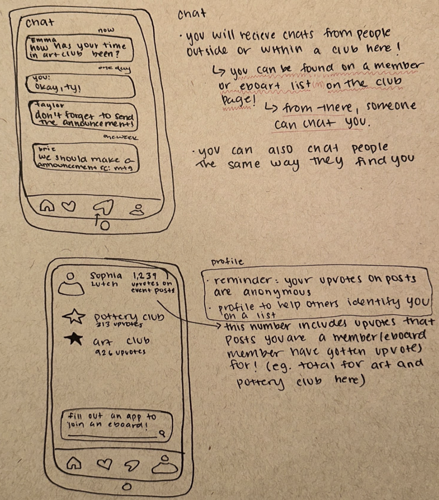
×
Our low Low-Fidelity wireframes tested navigation and task flow. Each tab was structured around a core function:
Events — Filter, RSVP, and share
Voting — Transparent elections with results pages
Resources — Educational materials and registration links
Profile — Track badges, RSVPs, and event history
Iterations
Simplified landing page with onboarding text
Added clearer confirmation for votes and RSVPs
Introduced badges for engagement and event attendance
Improved hierarchy for mobile readability
Risky Interactions
Badge Collection: Rewards engagement with badges like “Green Voter” or “Out and About.”
We developed a clickable prototype in Balsamiq and a high-fidelity Figma mockup for final presentation. The layout used modular blocks and generous white space for readability while maintaining the vibrancy of campus life.
User Flow Screens
Below are representative screens from the final user-flow prototype, showing navigation across the Events, Voting, and Profile tabs within the Spam! app.
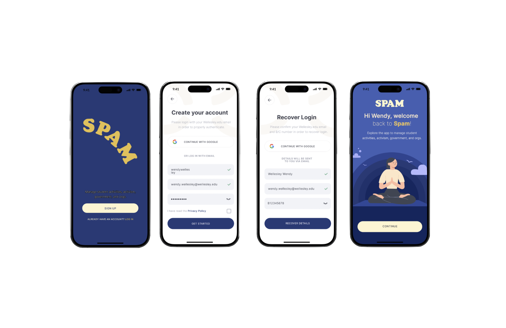
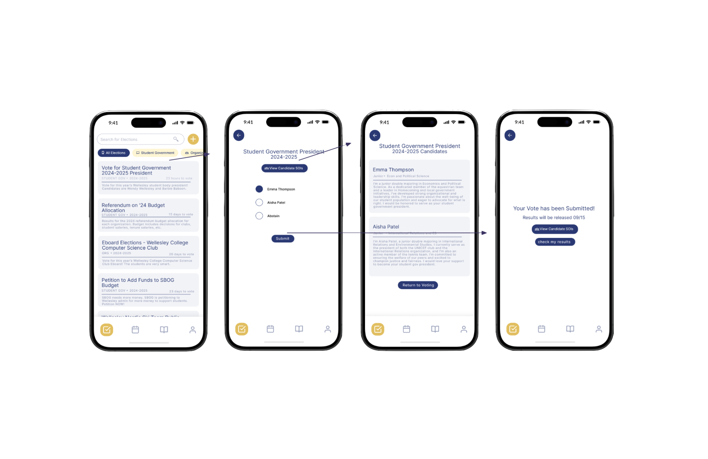
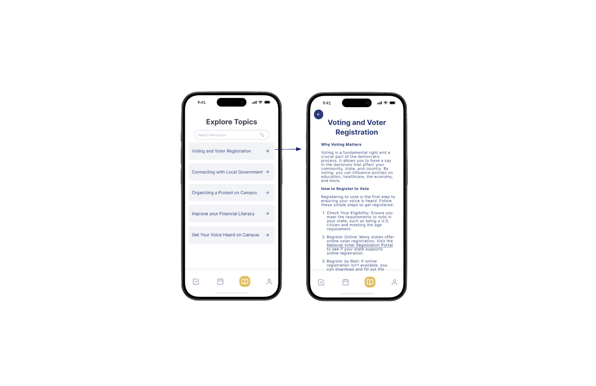
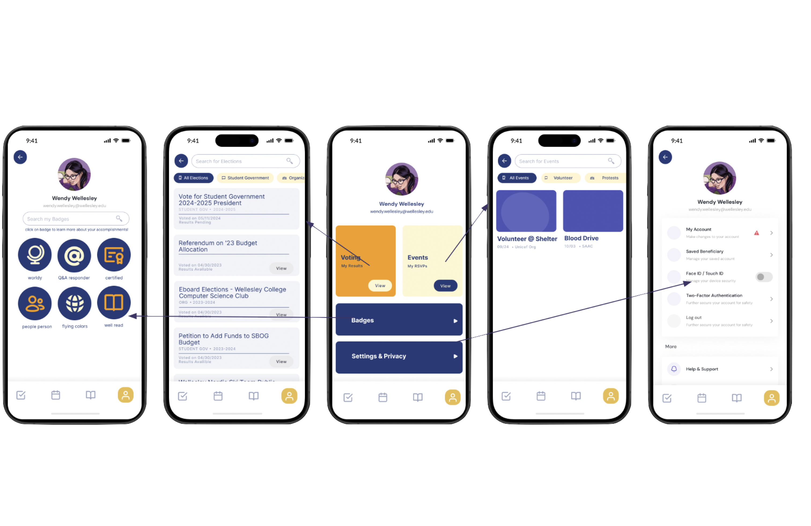
Testing
Usability testing included in-class pilots and remote moderated sessions. Participants completed three core tasks:
RSVP to an event
Cast a vote in a student election
Upload a Statement of Intent for leadership
Findings
Navigation and filtering were rated intuitive and engaging.
Users praised visual clarity and consistent color coding.
Some onboarding steps required clearer vote confirmation cues.
Adjustments Made
Added “My Results” transparency page
Clarified SSO authentication pathway
Added notification preferences and privacy disclaimers
Reflections & What’s Next
Visibility drives participation: Centralized information increased event engagement.
Transparency creates trust: Visible confirmation and results improved voting confidence.
Gamification works when balanced: Badges motivated but didn’t distract.
Accessibility through simplicity: A limited palette and hierarchy improved cognitive flow.
What’s Next
Integrate authentication and secure data infrastructure
Allow custom notifications (events, elections)
Run longitudinal usability studies to track engagement
Spam! demonstrates how HCI principles—needfinding, prototyping, and iterative testing—can transform everyday campus systems into accessible civic tools that inspire active participation and accountability.
 Brand palette
Brand palette
 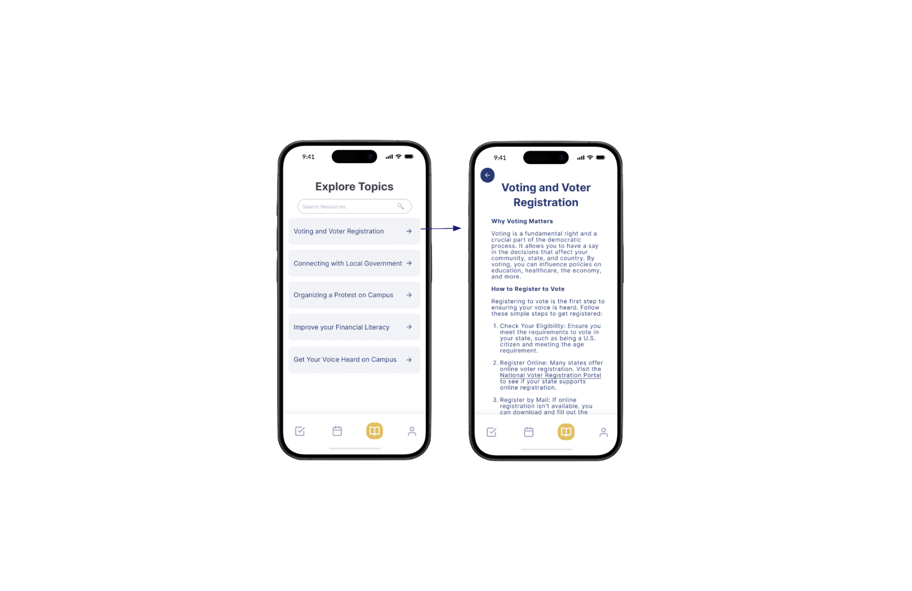
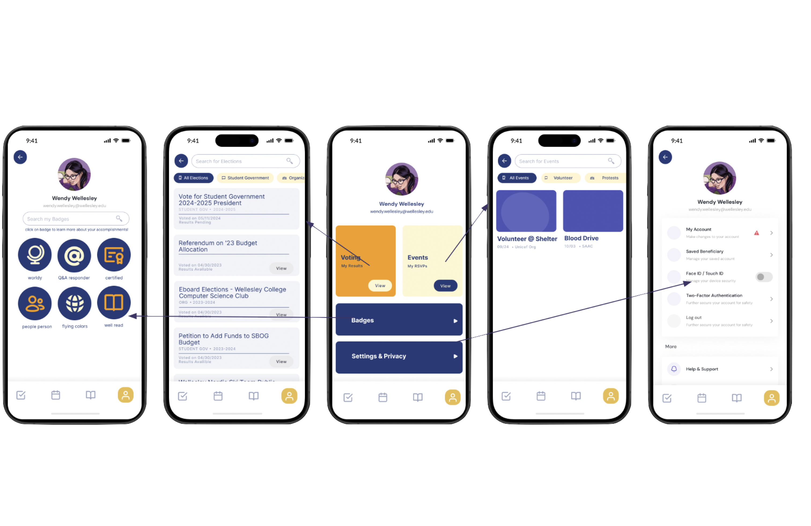
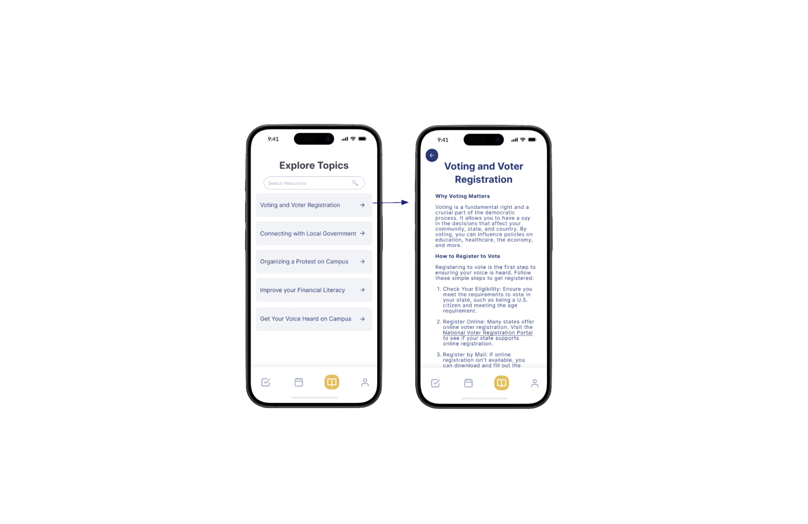
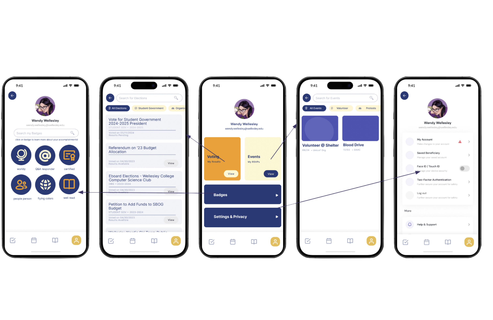